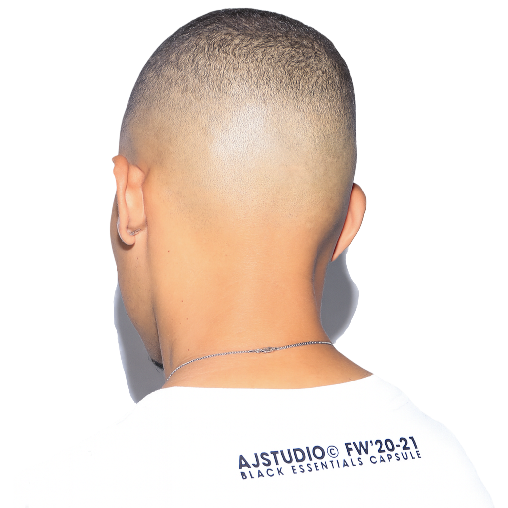
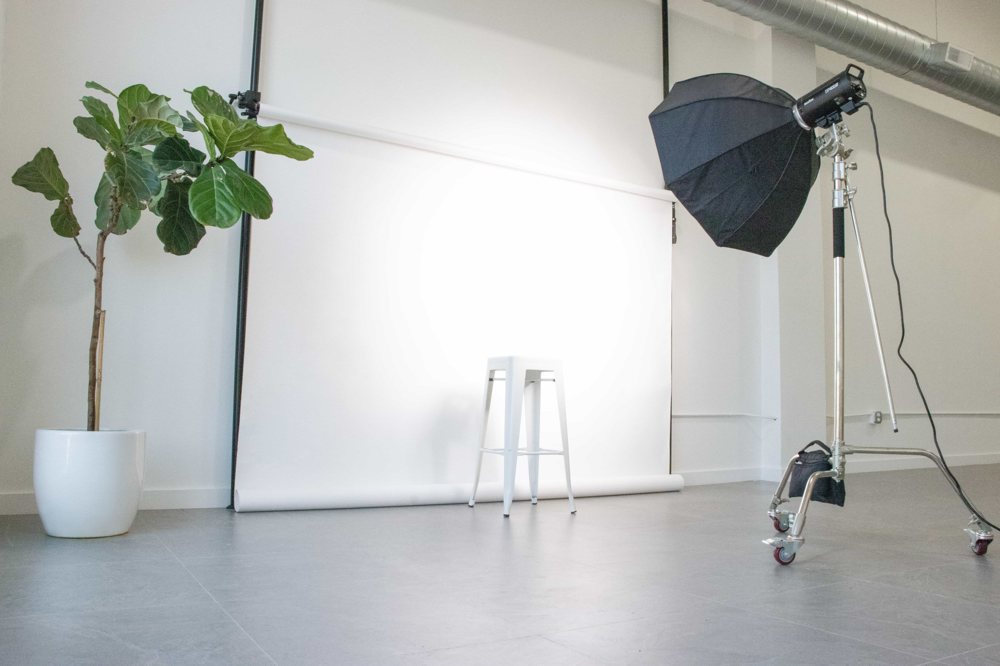
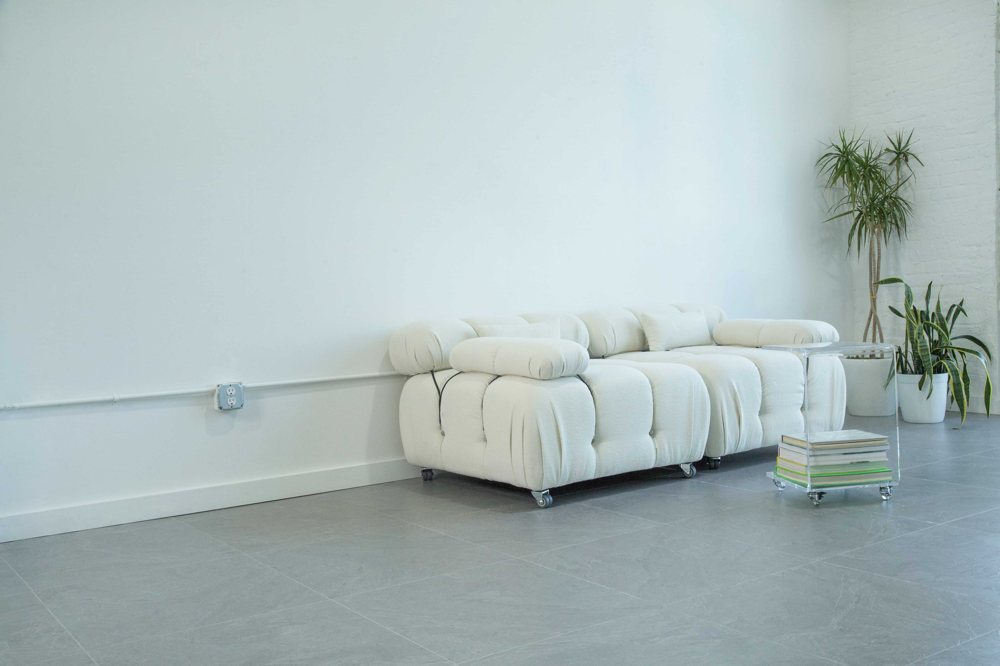
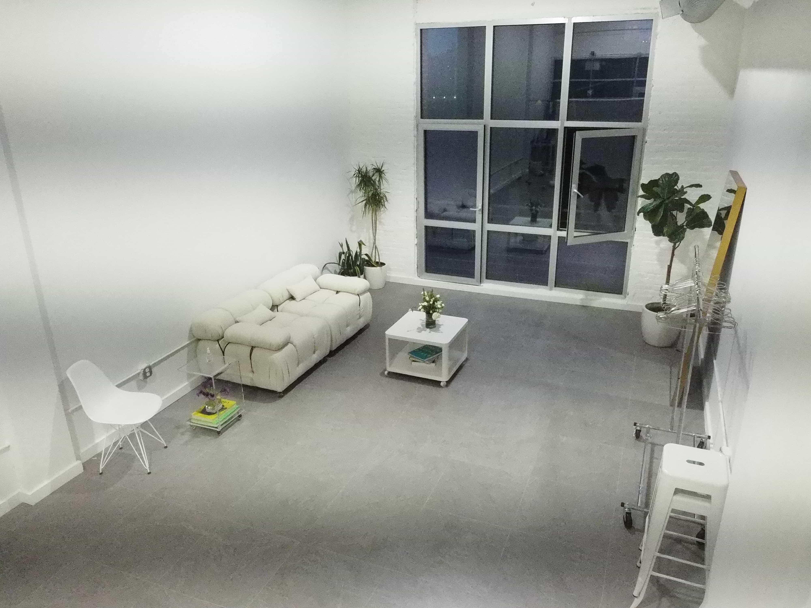
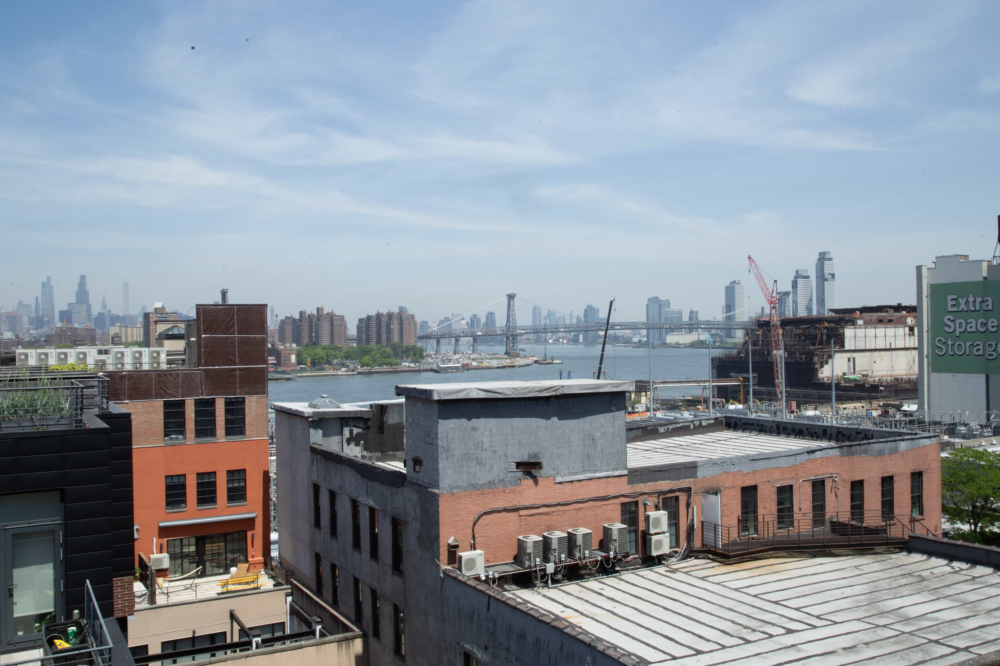
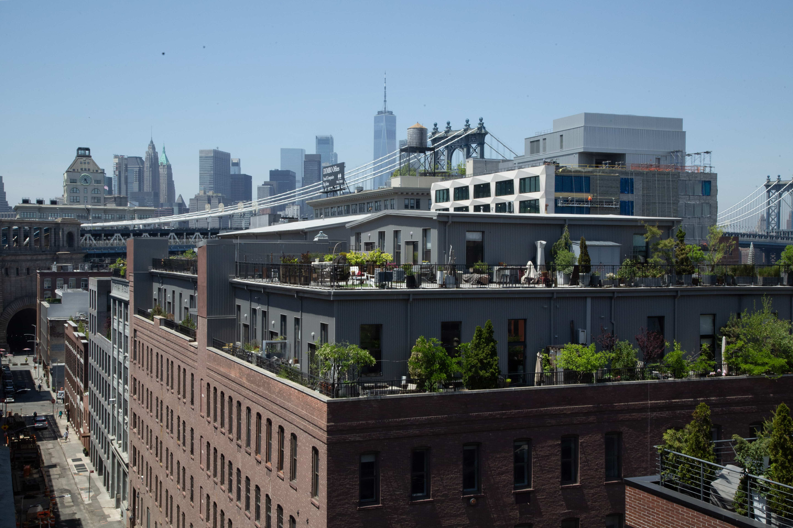
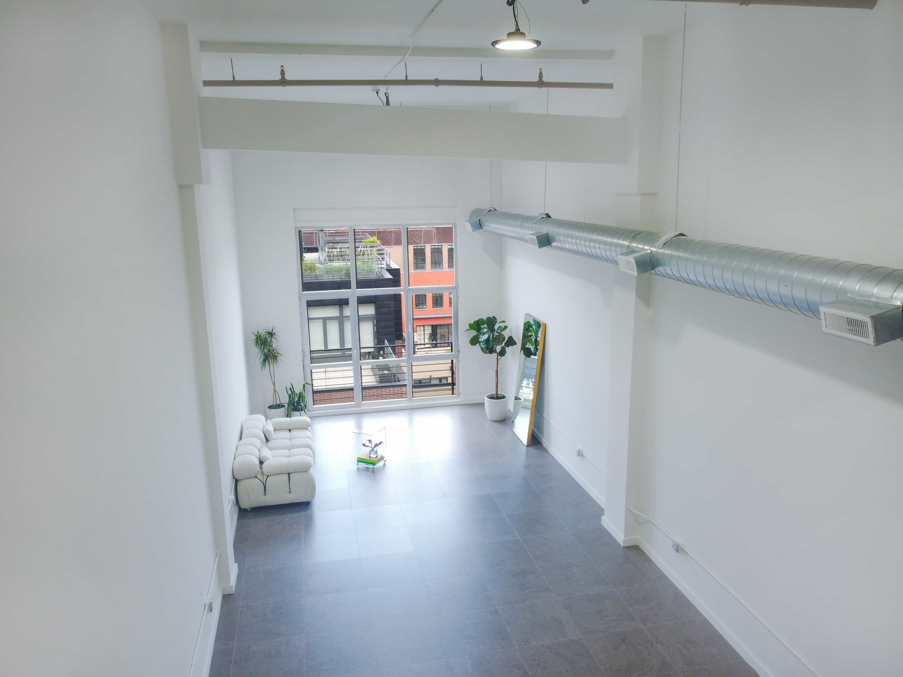

The Antonio Jefferson Studio is a modern sunlit space ideal for photo shoots, interviews, content days, and intimate creative events. Featuring stylish furniture, versatile backdrops, and natural lighting, the studio offers a warm and professional setting to bring your ideas to life. Located in the vibrant DUMBO area, it’s just steps away from top dining spots like Celestine, The River Cafe, Juliana’s, Time Out Market, Dumbo House, and Nobody Told Me, perfect for post shoot meals or client meetups. Easily accessible by multiple train lines and minutes from Manhattan, our studio balances comfort, convenience, and creative potential.
Antonio Jefferson Studio is more than just a space, it's a creative environment built for artists, brands, and storytellers. With natural light, professional-grade equipment, and a minimalist aesthetic, the studio is designed to adapt to your vision. Whether you're booking a shoot or renting the space for your own project, you'll find a clean, functional, and inspiring setting that supports quality work. From the curated amenities to the intentional layout, everything here is set up to make your process smoother and your final product stronger.

Antonio Jefferson Studio isn't just a space: it's a creative brand. Alongside the photo studio, we also drop limited-run merch that reflects the same energy that drives the work happening inside these walls. Designed in-house and released in small batches, every piece ties back to the culture, style, and creative mindset that defines the studio. Whether you're pulling up to shoot or repping the brand out in the world, the goal is the same: to build something real, intentional, and rooted in community.
Natural light. Essential gear. Hassle-free booking. Secure your time in our Brooklyn studio today





